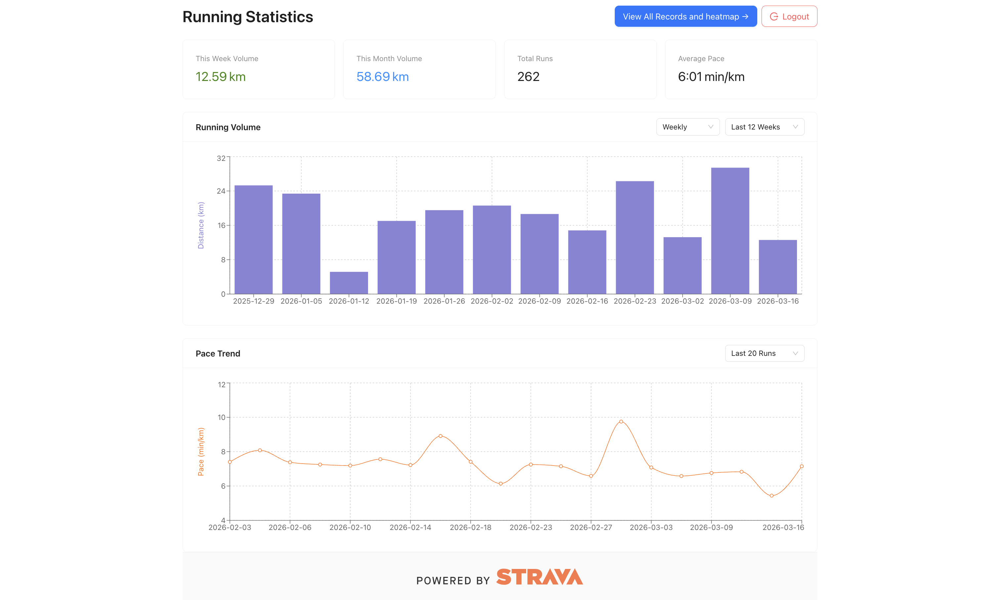
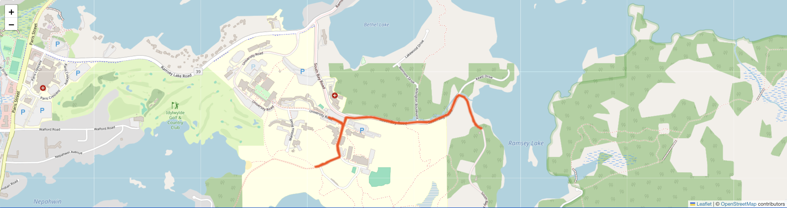
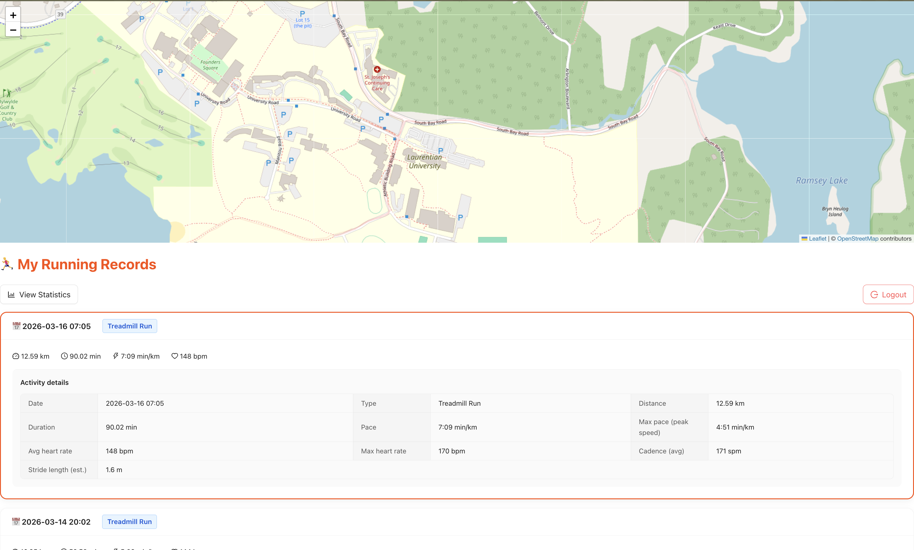

Toronto, Ontario
Full-stack web developer with a strong backend foundation in Python and Django.
I build practical, data-driven products with Python, Django, React, and PostgreSQL, with hands-on experience in REST APIs, OAuth integrations, database design, and responsive dashboards. I am currently completing my M.Sc. in Computer Science and pursuing junior software developer opportunities in Toronto.
Technical Skills
Backend Frameworks & APIs
Django, Django REST Framework, Flask, RESTful APIs, ORM, JWT, OAuth 2.0, and third-party integrations
Core Python & Problem Solving
Python, data structures and algorithms, regex, data manipulation, validation, and algorithmic problem solving
Frontend Development
React, single-page applications, React Hooks, state management, responsive UI, and data visualization libraries
Machine Learning & AI
Artificial intelligence fundamentals, supervised and unsupervised learning, PyTorch, and Transformer architecture
Database & Performance
PostgreSQL, database indexing, query optimization, Redis caching, and latency reduction under high-concurrency traffic
DevOps & Containerization
Docker, environment isolation, streamlined deployment workflows, and consistency across development and production
Experience
Software Test Engineer / Automation Developer
Shanghai SAIC Mobility Technology and Service Co., Ltd | Shanghai, China
- Managed and optimized testing operations for SAIC Mobility, a large-scale mobility platform under SAIC Motor Group supporting millions of daily active users and high-concurrency service requests.
- Spearheaded adoption of a custom Python UI automation framework integrating image recognition and DDT, mentored teammates in script development, conducted code reviews, and reduced manual testing effort by 40%.
- Built a resilient UI automation framework for complex cross-platform mobile applications by using image recognition techniques to bypass native element limitations.
- Improved script maintainability through a centralized UI abstraction layer, reducing test fragility and speeding up updates during rapid product iterations.
- Reduced automation flakiness by injecting and locking required configuration through APIs before test execution, improving environment consistency and run reliability.
- Engineered an automated data sandbox mechanism to simulate edge-case user states and isolate test data for broader and more reliable scenario coverage.
- Collaborated with cross-functional teams to stabilize test environments, support product evaluations, and accelerate delivery workflows tied to the CI/CD pipeline.
Featured Project
Lace Up - Running Performance Platform
Django | React | PostgreSQL | Strava API | OAuth 2.0
A full-stack fitness analytics platform that connects to Strava and turns raw workout activity into readable dashboards, historical trends, and route-based insights.



- Built the application end to end with Django, React, and PostgreSQL, covering data modeling, API integration, frontend views, and product flow.
- Integrated the Strava API using OAuth 2.0 to authenticate users and sync training data into a structured backend system.
- Designed relational database models to store activity metrics, route information, and user training history for analysis and visualization.
- Implemented responsive dashboards and activity views that present pace, distance, and trend data in a clean and usable interface.
- Strengthened practical backend skills around external API handling, schema design, and transforming raw third-party data into user-facing product features.
Backend
API integration, authentication flow, relational schema design, and server-side data processing.
Frontend
Responsive React interface for dashboards, activity summaries, and readable data presentation.
Why It Matters
Demonstrates full-stack ownership and the ability to build a product around a real-world API and data workflow.
Education
Shanghai Dianji University - Shanghai, China
Bachelor of Engineering in Communication Engineering
Scholarship Recipient
Laurentian University - Sudbury, Ontario, Canada
Master of Science in Computational Sciences
Interests
Marathon running, tennis, badminton, swimming, and hiking, reflecting an active lifestyle and long-term consistency outside of work.